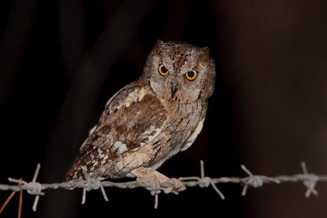
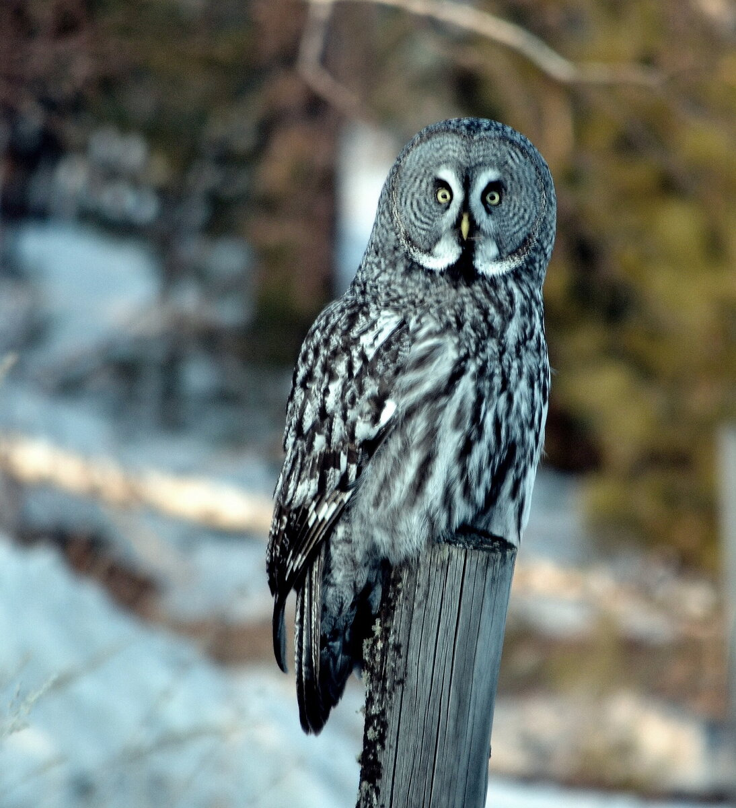
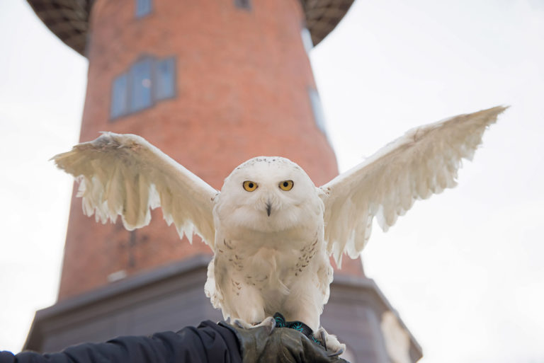
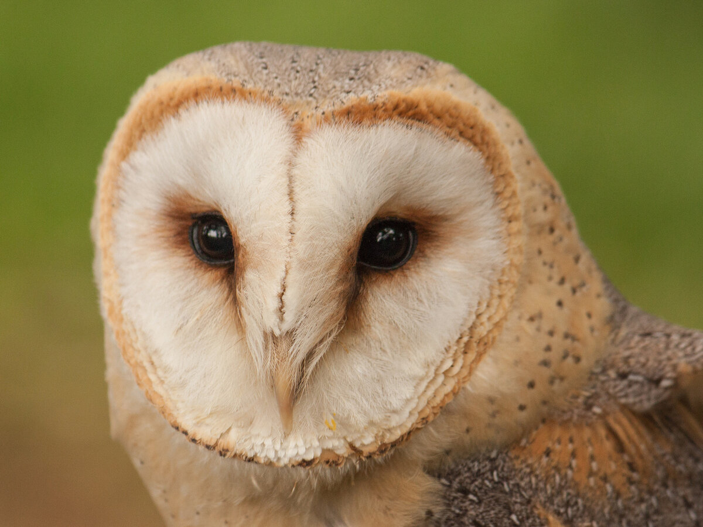
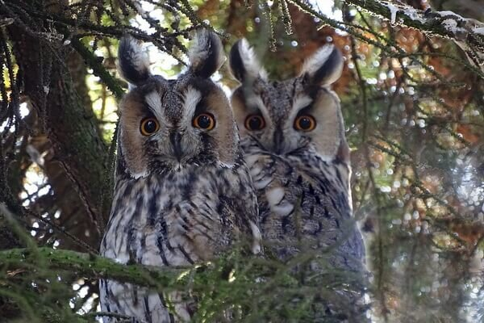
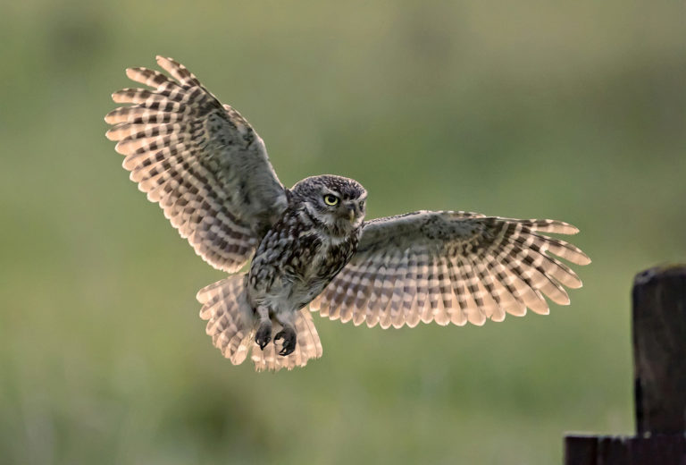

СОВА end ФИЛИН
Чем отличается сова от филина, рассказали в зоопарке Шымкента
Разнообразие филинов представлено почти двумя десятками видов, тогда как сов гораздо больше. Между ними немало сходства, поскольку все они относятся к совообразным, но есть и некоторые существенные отличия"
Пресс-служба зоопарка Шымкента
25 декабря 2023 года в пресс-службе зоопарка Шымкента заявили, большинство людей ошибочно полагают, что филин - это самец совы, сообщает Zakon.kz.
Чтобы не путать этих птиц, следует запомнить основные характеристики, позволяющие понять, в чем разница между филином и совой.
Размеры тела - одна из первых характеристик, по которым можно понять разницу между филином и совой. Представители первых почти всегда крупнее вторых.
Большинство филинов выделяется более пестро-пятнистой окраской оперения по сравнению с совами. Для последних характерен однотонный окрас перьев.
"Существенная разница между совой и филином заключается в образе жизни этих пернатых. Все совы считаются ночными хищницами. Охотятся они обычно по ночам, а днем отдыхают. Исключение составляет полярная сова, что связано сф особенностью среды ее обитания и своеобразной уникальностью вида, который в целом существенно отличается от ряда своих сородичей".
Пресс-служба зоопарка ШымкентаКроме того, совы обычно селятся в лесах и на открытых территориях. Филины хоть и считаются типично лесными птицами, все же менее привередливы в плане жилья. Они могут селиться в самой различной местности (в горах, среди пустыни), а свои гнезда обустраивать не только в дуплах деревьев, но и среди скал, на земле.
Интересные факты:
- Совы меньше по размеру, чем филины.
- Большинство сов имеет короткие крылья, в то время как размах крыльев филина может достигать полутора метров.
- Совы охотятся на мелких грызунов, филины – на крупных зайцев и даже косуль.
- Совы часто селятся рядом с людьми, филины – никогда.
Как выглядит филин?
В переводе название вида означает сова сов, что в свою очередь описывает и внешний вид взрослой особи – это классическая сова с перьями и своеобразными ушками на голове. Масса одного хищника составляет около 4 кг. Размах крыльев достигает длины почти в 2 м.
Характеристика взрослой особи:
- размер средней особи – от 60 до 75 см;
- масса самок до 3 кг.
На голове взрослой особи должны быть характерные уши. Их положение меняется. Оперение взрослой особи отличается от оперения молодняка. Основной окрас – коричневый, рыжий. Перо по цвету неравномерное, но цвета перьев гармоничные. Бурые пятна равномерно распределяются по всему покрову.
Описание различий: некоторые виды не имеют существенных различных в массе самок и самцов. По мнению ученых, именно форма и длина ушек описывает пол особи.
Описание различий: некоторые виды не имеют существенных различных в массе самок и самцов. По мнению ученых, именно форма и длина ушек описывает пол особи.
Птица сидит ровно, но издавая звуки, немного выгибает спину. Продолжительность жизни: в природных условиях около 20 лет, домашний филин может прожить 60 лет.
Совы — птицы, очень умные и глубокие птицы. Совы хищные птицы, как правило, они живут по одиночки, будучи хищными птицами, они охотятся на других меньших птиц, насекомых и маленьких животных. Совы — охотники, они — вечерние существа. У совы большие глаза и уши, интересный клюв, плоское лицо, когти, пушистые перья, ну и конечно перья вокруг глаз. Совы — скрытные существа, в природе чаще удаётся слышать их голоса, чем видеть самих птиц.
Совы и филины
Филин -- хищная птица, жизненный образ которой до сих пор изучен не полностью. Филин - самая большая ночная хищная птица. Остальные совы, по сравнению с ним, кажутся карликами. Филин - прекрасный охотник. Он имеет отличное зрение и острый слух. Необычайной красоты пернатый хищник вписан в Красную книгу и на сегодняшний день специалисты считают, что велика вероятность полного исчезновения этого вида птиц. Настоящим украшением филина служат огромные, как лунные блюдца глазищи и прикольные маленькие ушки на самой макушке. У филина крепкие загнутые вниз когти и массивные лапы, благодаря этому попавшейся в когти хищнику жертве вырваться нет ни единого шанса. К тому же когти острые, словно скальпель и могут достать до важных органов добычи, что становится причиной того, что жертва теряет способность сопротивляться. Полет филина прекрасен и практически бесшумен. Когда птица парит в воздухе, то огромные крылья буквально разрезают воздух. Для начала филин несколькими взмахами набирает скорость, а затем ровно и долго парит, внимательно осматривая местность и добычу. Жить филин предпочитает в гордом одиночестве. Правда, иногда самка с самцом могут быть соседями, но у каждого из них свое личное пространство и кров. Филин – птица, которую называют ночным охотником. Облетать свои владения он любит после захода солнца. А вот днем пернатый хищник отсыпается, укрывшись от окружающего мира в густых ветвях деревьев и кустарников, прикорневой части растений или в скальной расщелине, расположенной на солнечной стороне.

ИНТЕРЕСНЫЕ ФАКТЫ из жизни сов и филинов
- Охотники рассказывают, что филин перехватывает у них в воздухе подстреленную дичь.
- На своей территории филин нападает на других сов и хищных птиц, например, канюка, пустельгу. Иногда ему удаётся осилить даже таких крупных птиц, как полярная сова или молодой орлан-белохвост.
- Филин - это сильная хищная птица, он способен поднять тяжёлую добычу, например, лису.
- Гнёзда филинов были найдены на высоте 4500 м над уровнем моря. Их гнёзда - это просто вытоптанная ямка в земле.
- Изредка филины могут нападать даже на самок косули, молодняк горных козлов или зайцев.
- Поймав очень большую добычу, которую сразу съесть он не может, филин прячет остатки и возвращается к ним следующей ночью.
| Название | Фото | Описание | |
|---|---|---|---|
| Размеры | Среда обитания | ||
| Совка-сплюшка |  | 20-25 см | Некрупная птица, длиной в 20-25 см, с оперением серо-коричневых оттенков с белыми и черными вкраплениями. Голос птицы, мелодичный, периодически звучащий «сплю-у-у» дал название виду. |
| Бородатая неясыть (Strix nebulosa) |  | Размах крыльев 150-160 см, вес до 2 кг. | В древнерусском языке упоминали птиц как ненасытных хищников. Полет совершенно бесшумный, благодаря особому строению пера. Птиц часто называют просто лесными совами, их уханье часто путают с криками филина. |
| Рыбный филин (Bubo blakistoni) | Размах крыльев 180-190 см, вес до 4 кг. | Верх тела рыжевато-коричневый с темными пятнами и прожилками. Горло белое. Низ тела бледно-рыжевато-желтый с темными полосами. Бедра и подкрылки светло-рыжие. Лицевой диск не выделяется, рыжевато-коричневый. Голова и затылок с длинными перьями, они придают взъерошенный вид. Ушных пучков нет. Глаза темно-коричневые. Низ лап голый и бледно-соломенного цвета, на подошвах спикулы, которые помогают хватать и удерживать рыбу. | |
| Полярная сова (Nyctea scandiaca) |  | Размах крыльев 140-160 см, вес до 3 кг. | У большой совы голова плавно закругленная и без ушных пучков. Тело объёмное с плотными перьями на лапах. У белых птиц имеются черные или коричневые пятна на теле и крыльях. На самках пятна довольно частые. Самцы бледнее и белеют с возрастом. Глаза желтые. |
| Сипуха (Tyto alba) |  | Размах крыльев 90-100 см, вес до 0,7 кг. | У неё белый лицевой диск в форме сердца и белая грудь с небольшими коричневыми пятнами. Спина желтовато-коричневая с черно-белыми пятнами. Самцы и самки схожие по окрасу, но самки крупнее, темнее и более заметны. |
| Ушастая сова (Asio otus) |  | Длина тела этих птиц – 30-35 см, а размах крыльев – 0,8-1 м, вес до 0,5 кг. | Этот вид, нередко именуемый «филином в миниатюре», обладает средними габаритами и представлен шестью основными разновидностями. В окраске преобладают серо-бурые оттенки с пёстрыми пятнами, при этом брюшко обычно белое. Характерная черта вида – наличие на голове больших ушных пучков перьев. Ареал обитания – европейские и северноазиатские страны. Для гнездования выбирает хвойные леса, занимая при этом гнёзда иных птиц, а охотится на полях и разных открытых местностях. Зимует на севере Африки. |
| Домовый сыч (Athene noctua) |  | Размах крыльев 50-60 см, вес до 0,17 кг. | Лицевой диск нечетко выражен, серовато-коричневый со светлыми пятнами и беловатыми бровями. Глаза от серо-желтого до бледно-желтого, восковина оливково-серая, клюв от серовато-зеленого до желтовато-серого цвета. Лоб и корона с прожилками и беловатыми пятнами. Верхняя часть тела темно-коричневая, с множеством беловатых пятен. Хвост темно-коричневый с несколькими беловатыми или бледно-охристыми полосами. Горло с узким коричневым воротником внизу. Пальцы бледно-серо-коричневые, щетинистые, когти темно-роговые с черноватыми кончиками. |